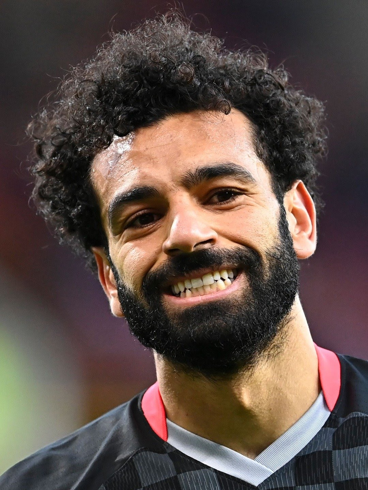
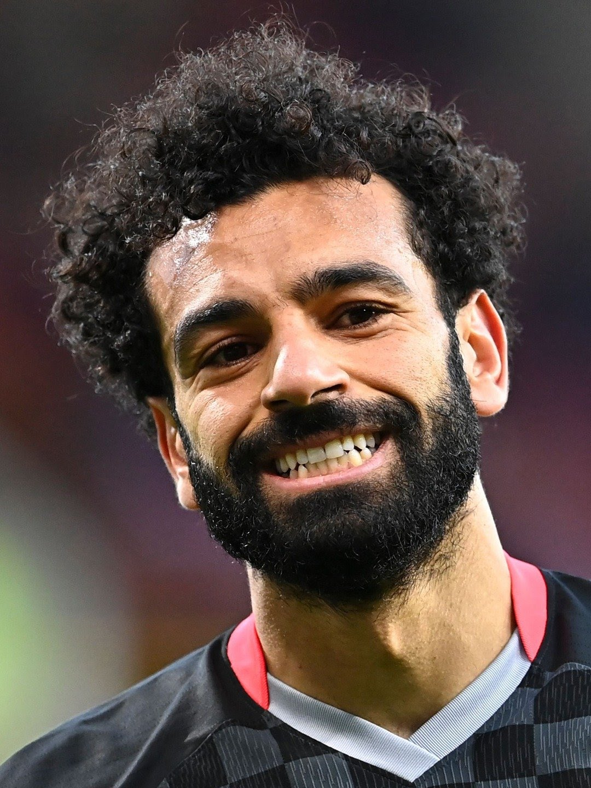
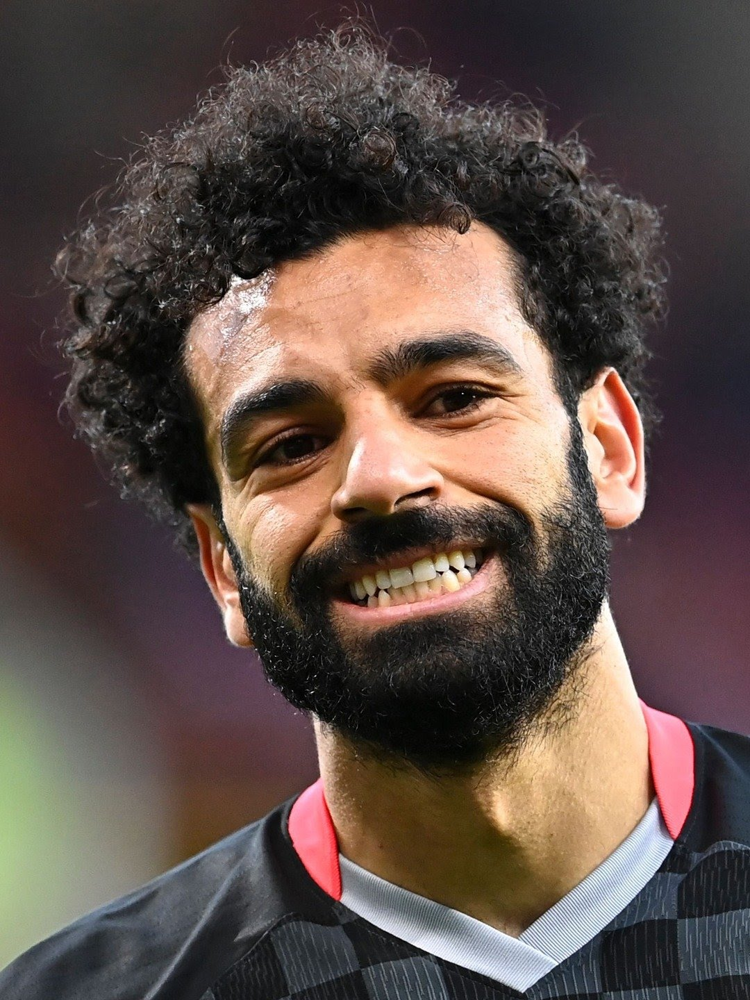

There are hundreds of professional soccer players that are unbelievable in their ability to play soccer on the field. Many of these players are followed and watched by large number of audiences. Here is a list of the most talented soccer players in the world that I like the most:
